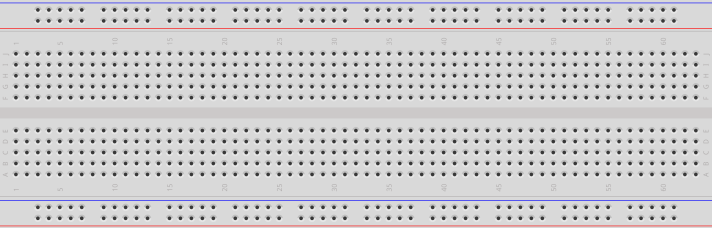
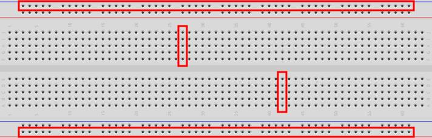
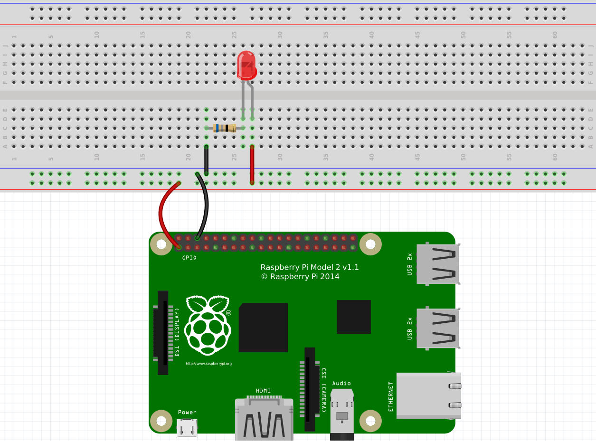
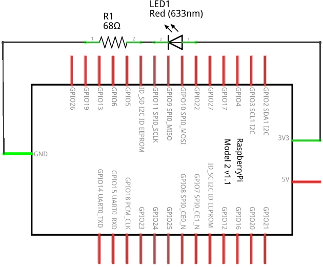
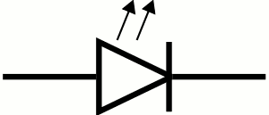
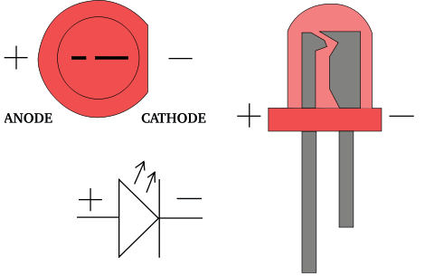
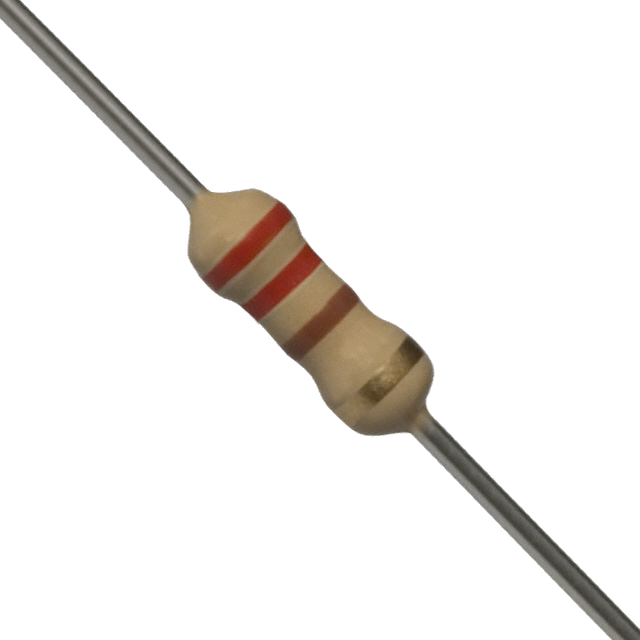

LED the Way (Preview)
The next Raspberry Pi activity will involve implementing various circuits that illustrate some of the ones covered above. Initially, the Raspberry Pi will only be used as a power source. We will be connecting it to a circuit prototyping board called a breadboard, and the Raspberry Pi will provide power to the breadboard. A breadboard is used to simplify the process of prototyping connections between electronic components. It allows the making of secure connections between simple electronic devices by simply plugging them into appropriate rows or columns of the board. Here’s an example of a breadboard:
Breadboards actually derive their name from a breadboard (i.e., a wooden board on which bread is often cut). This is because early versions of breadboards were made from the wooden bread cutting workstations.

The holes in the breadboard allow electronic components (including wires) to be connected to each other. Note that there are internal connections within the breadboard. Each row along the top and bottom of the breadboard is connected. In addition, each column in the center portion is connected; however, there is a disconnect across the center gap:

Circuit Representation
The first part of the Raspberry Pi activity will simply be to connect a power supply to a light. Since the Raspberry Pi provides DC, the light we will use is called an LED. We’ll explain this later; but for now, here’s an example of the connected electronic components for this part of the activity:

The image above is an example of the topological layout of a circuit. That is, it does a pretty good job of showing how the circuit looks physically when connected. Of course, there are many more ways to layout this exact circuit, and this is just one way. This method of diagramming a circuit is called a layout diagram because it shows the physical layout of the electronic (and other) components.
A circuit diagram (also known as a schematic) is another way of representing a circuit that only shows the connections and substitutes actual electronic components with standard symbols.

Figure 1 is an example of a circuit diagram.
A circuit diagram is a useful way to represent a circuit. Note how it can topologically be laid out in a number of ways. Various electronic components have unique symbols. For example (in the circuit diagram above), the LED has the following symbol:

The resistor has the following symbol:
The large rectangular object with lines coming out of it is the Raspberry Pi. Technically, this represents the GPIO pins on the Raspberry Pi. We’ll discuss this more later. We will also show more electronic components and their symbols later.
The Components
Let’s go through the components, one-by-one. At the bottom is the Raspberry Pi. You will notice that there are two wires connecting some pins on the RPi to the breadboard. We typically use red wires to signify positive voltage and black wires to signify negative voltage. In DC, the negative side is called ground. So red wires connect positive power to something, and black wires connect something to ground.
The red “light” in the circuit is called an LED (Light Emitting Diode). An LED is more convenient than a traditional light bulb, because it does not require high voltage in order to turn it on. In fact, it consumes such a small voltage that typical higher voltage levels would render the LED unusable. Be careful when using LEDs, and never connect them directly to a voltage source.
An LED allows current to flow through it in only one direction (from positive to negative). LEDs have a short leg and a long leg. The short leg is called the cathode and is the negative side. The long leg is called the anode and is the positive side. The head of an LED is also flat on one side: the negative (or cathode) side. LEDs come in various colors (the one in the circuit above is red, for example). The longer leg of an LED should always be connected to the positive side of your voltage source. If it is connected backwards (i.e., with the shorter leg connected to the positive side), the LED will not light and may even burn out. For this reason, an LED should always be connected to a DC voltage source.

Since most power sources are too strong for typical LEDs, we must reduce the current somewhat so that the LED does not become damaged. Resistors are typically used to resist the flow of electricity. When using them with LEDs, we typically connect a resistor in series with the LED. It doesn’t matter if the resistor is on the positive or negative side of the LED. It works the same in either case. Resistors come in various resistances. Resistance is measured in a unit called the ohm (Ω). Here is an example of a 220Ω resistor:
Resistors have different values, and the value of a resistor can be determined by looking at the colored bands that surround its body. Because resistors are typically small in size (any letters written on one would be too small to be easily read), engineers invented a color code that can be used to calculate the resistance of a resistor. There are multiple online resources that can teach you how to read the value of a resistor from its colors.

Ohm’s Law
We can calculate the resistance required to resist the flow of electricity through the LED using Ohm’s Law. Ohm’s Law establishes a relationship between voltage, current, and resistance. Let’s first fully define each of these:
Voltage is the difference in electric potential energy between two points. It can be considered as electric pressure and/or the work required to move electric charge between two points. The unit used to represent voltage is the volt (V).
Current is the flow of electric charge (or electrons moving through a wire). The unit used to represent current is the ampere (A), or amps. We typically used the symbol I to represent current in a mathematical formula (such as Ohm’s Law).
Resistance is the measure of difficulty to pass an electric current through a conductor. A conductor is some material that allows the flow of electric current. The unit used to represent resistance is the ohm (Ω). We typically used the symbol R to represent resistance in a mathematical formula (such as Ohm’s Law).
Ohm’s Law is defined as the following: \[ V = IR \]
Stated formally, the voltage (electric potential difference) across two points on a circuit is equivalent to the product of the current between those two points and the total resistance of all electrical devices present between those two points.
Consider the LED circuit above, where the red LED requires a forward voltage of 2V (i.e., the amount of voltage required across the LED to light it) and has a forward current of 20mA (i.e., the amount of current flow required through the LED to sufficiently power it on). These values are provided in the data sheet of the LED. A data sheet is a document that provides technical information about an electrical component.
We can calculate the resistance required in the circuit to ensure that the LED lights up properly and is not possibly damaged by having too much current move through it or too much voltage across it. Suppose that our power source (the Raspberry Pi) provides 3.3V. The voltage difference across the source voltage and ground is 3.3V (since ground is at 0V). According to the data sheet, the LED requires 2V across its legs and requires 20mA of current through it. Using Ohm’s Law we can solve for R. The value for V is 1.3V (3.3V at the source – 2V through the LED), and the value for I is 0.02A (20mA required through the LED). And now we solve: \[ \begin{split} V &= I * R \\ (3.3V - 2V) &= 0.02A * R \\ 1.3V &= 0.02A * R \\ 65 &= R \end{split} \]
So the resistance should be 65Ω. The closest valued resistor available is 68Ω. We can therefore use a 68Ω resistor in series with the LED. This should be sufficient to turn it on brightly without damaging it.
You may have noticed that resistors also have a wattage rating. To explain this, we must first discuss electric power. Electric power is the rate at which electric energy is transferred by a circuit. The unit used to represent power is the watt (W). Each component in a circuit dissipates power (as heat – usually through friction – as electrons move through the component). Therefore, each component has a power rating that provides a measure of how much power it can dissipate without breaking down. We can calculate the power dissipated in a circuit using a variant of Ohm’s Law:
\[ P=VI \]
The power in a circuit is defined as the product of the voltage across two points on a circuit and the current between those two points. In the LED example above, the total power dissipated in the circuit is calculated as follows:
\[ \begin{split} P &= V * I\\ P &= 3.3V * 0.02 A\\ P &= 0.066W \end{split} \]
To calculate the power dissipated by each component, we simply need to isolate the voltage drop across each. The current is constant in the entire circuit. So for the LED, we can calculate the power dissipated as follows:
\[ \begin{split} P &= V * I\\ P &= 2V * 0.02 A\\ P &= 0.04 W \end{split} \]
So we would need an LED rated at 0.04W. And for the resistor:
\[ \begin{split} P &= V * I\\ P &= ( 3.3V −2V ) * 0.02 A\\ P &= 1.3V * 0.02 A\\ P &= 0.026W \end{split} \]
So we would need a resistor rated at 0.026W.
In the end, we usually opt for a power rating that is greater than the actual power dissipated by the component (so that it can last a long time). A good target is not to exceed 60% of the wattage rating of the component. For the resistor, this means a power rating of 0.043W (\(0.026W / 0.6\)). Most typical resistors are rated at 0.25W (some are 0.125W and others are much higher). For the LED, this means a power rating of 0.067W (\(0.04W / 0.6\)), or 67mW. Most typical LEDs are rated at approximately 120mW. For this circuit, a typical LED rated at 120mW and a resistor rated at 1/8W would work just fine.